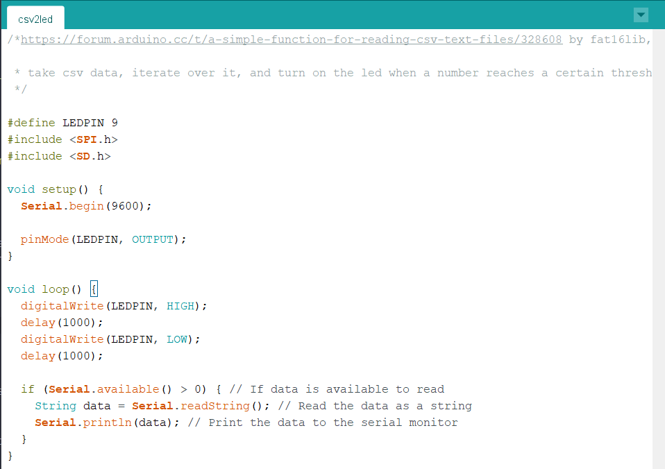

Below is my formative assignment presentation. It details my two first ideas and how I would go about realising them. After receiving feedback I'm deciding to go forward with the Arduino project: visualising electrical signals sent by fungi to communicate with each other.
Since I'm focusing on the web in another class, I want to challenge myself by using a medium I haven't had much time to play with. I'm expecting the circuitry to be simple but the data processing to be difficult because of my inexperience.
Using WebPlotDigitizer I can extract numerical data from graphs showing spikes in electrical activity of studied fungi over time. Then I need to find some way to map this data onto HIGH, LOW values when writing to the LEDS. Once I see the ranges in the numerical data I can decide on how those ranges translate into 1s and 0s. I'll start with a signal LED at first and then increase the number of them and the complexity
After starting tests using Arduino I realised I would prefer to create something digital instead of physical. You cannot read CSV files directly into an Arduino program, so there are a few different ways I could try getting my data onto an Arduino. Writing a script in Processing or Python that converts the CSV file to an array, then sends it over serial communication is one way. Or I could use an SD card and the Arduino SD library and load the data like that. Since there are so many steps involved in this process there are also many opportunities for things to go wrong. This led to me to wanting to create a visualiser for a website; it's a medium I am more experienced in and given time constraints I think more appropriate for me in this module.
I still want to retain the aesthetic of my previous idea, an artistic imitation of fungi and their communications, but instead by creating an animation on this website.
For this initial test I just wanted to understand the logistics of loading data and processing it with javaScript. It draws a differently coloured circle representing each of the 4 chemicals found within a genome (A, C, G, T), depending on if it shows up within the string. In my javaScript sketch I made a note to myself to design a shape for the pattern of circles to follow, which I expand on in my next test.
In this vector field test I'm essentially trying to trace the patterned lines found on images of oyster mushrooms and use the lines as paths for a vector field animation.
miscellaneous tests: